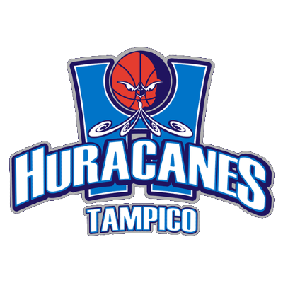
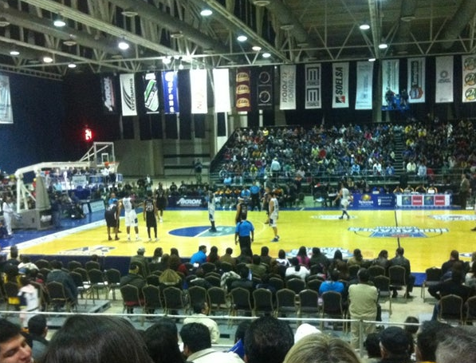

CNMB
| Escudo |
|---|
|  |
| Datos |
| Nombre: Halcones de Tampicobr>
Anio de Fundacion: 2009 Ciudad: Tampico, Tamaulipas Estadio: Expo Tampico Capacidad: 4,200 Sitio web: https://www.lnbp.mx/Huracanes/ |
| Historia |
|
El equipo fue creado en 2009 en base a los esfuerzos de instituciones publicas y privadas de Tampico para regresar el basquetbol en la ciudad, despues del lugar vacante que dejo el equipo de los Correcaminos UAT. Fue el primer equipo de la LNBP que jugo un partido amistoso con un equipo europeo. |
| Estadio |
|  |